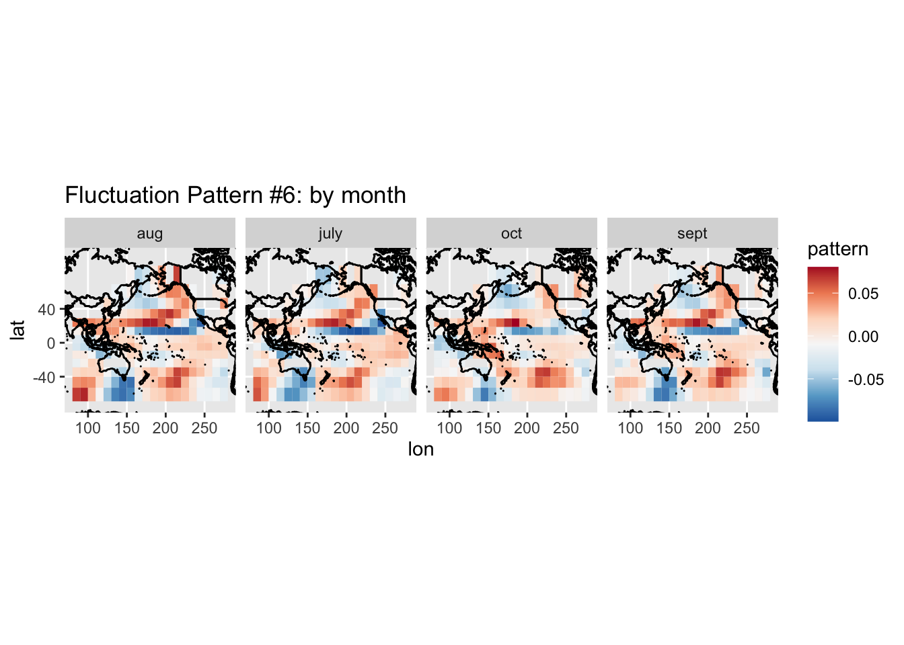
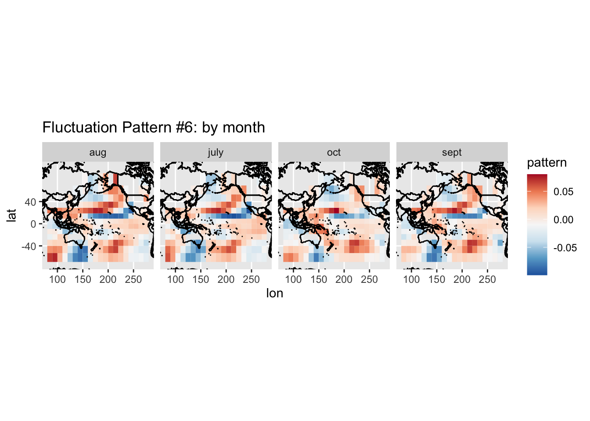
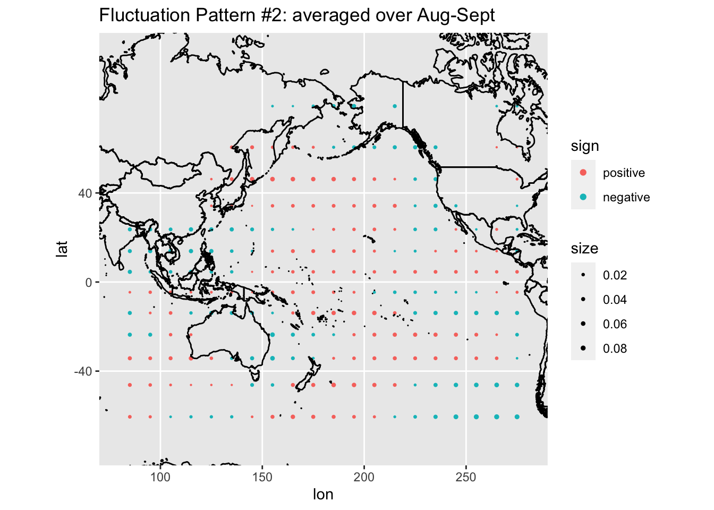
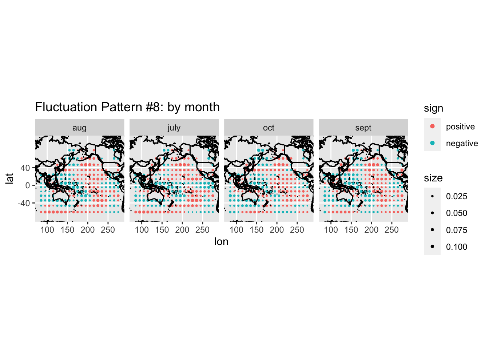
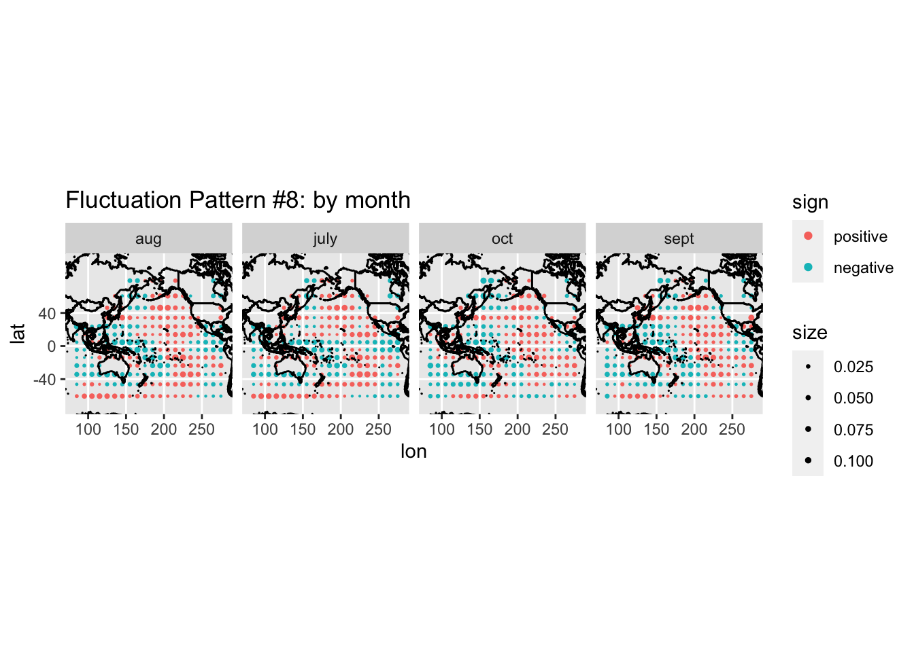

Fluctuation Pattern over the map
Joonsuk Kang
2020-05-11
Last updated: 2020-05-16
Checks: 7 0
Knit directory: tlcf/
This reproducible R Markdown analysis was created with workflowr (version 1.6.0). The Checks tab describes the reproducibility checks that were applied when the results were created. The Past versions tab lists the development history.
Great! Since the R Markdown file has been committed to the Git repository, you know the exact version of the code that produced these results.
Great job! The global environment was empty. Objects defined in the global environment can affect the analysis in your R Markdown file in unknown ways. For reproduciblity it’s best to always run the code in an empty environment.
The command set.seed(20200324) was run prior to running the code in the R Markdown file. Setting a seed ensures that any results that rely on randomness, e.g. subsampling or permutations, are reproducible.
Great job! Recording the operating system, R version, and package versions is critical for reproducibility.
Nice! There were no cached chunks for this analysis, so you can be confident that you successfully produced the results during this run.
Great job! Using relative paths to the files within your workflowr project makes it easier to run your code on other machines.
Great! You are using Git for version control. Tracking code development and connecting the code version to the results is critical for reproducibility. The version displayed above was the version of the Git repository at the time these results were generated.
Note that you need to be careful to ensure that all relevant files for the analysis have been committed to Git prior to generating the results (you can use wflow_publish or wflow_git_commit). workflowr only checks the R Markdown file, but you know if there are other scripts or data files that it depends on. Below is the status of the Git repository when the results were generated:
Ignored files:
Ignored: .Rhistory
Ignored: .Rproj.user/
Untracked files:
Untracked: analysis/index_updates.Rmd
Untracked: analysis/origin_bimodality.Rmd
Untracked: analysis/pattern_anomaly_tempcodes.Rmd
Untracked: analysis/q_adaptivity.Rmd
Untracked: analysis/temp.Rmd
Untracked: analysis/update_20200420.Rmd
Untracked: code/altmin_fixX.m
Untracked: code/run_altmin_bimodality.m
Untracked: data/forecasting_data/
Untracked: data/maps_data/
Untracked: output/errors_p100m14_fixX.csv
Untracked: test.txt
Unstaged changes:
Modified: code/wflow_commands.R
Note that any generated files, e.g. HTML, png, CSS, etc., are not included in this status report because it is ok for generated content to have uncommitted changes.
These are the previous versions of the R Markdown and HTML files. If you’ve configured a remote Git repository (see ?wflow_git_remote), click on the hyperlinks in the table below to view them.
| File | Version | Author | Date | Message |
|---|---|---|---|---|
| Rmd | 13a727b | Joonsuk Kang | 2020-05-16 | Fluctuation Pattern over the map |
Introduction
Here we plot the first 10 fluctuation patterns, learned using observation and simulation data, over the world map.
For a given fluctuation pattern, we have values corresponding to the 900 predictors, each of which is the standardized tempreature from (longitude, latitude, month) where longitude \(\in [85,275]\), latitude \(\in [-55,65]\), and month \(\in \{July, August, September, October\}\).
For each factor, we first show one figure for month-averaged patterns and then four month-specific patterns. In general, the four month-specific figures are consistent with each other, thus also with the month-averaged figure.
Figures are presented in two methods: one set of figuers in tile plots and the other in dots. The values for a fluctuation pattern are not sparse, unlike the estimated coefficients from lasso. Thus, to hightlight the continuous variation across locations, figures are shown in tile versions in addition to point plots.
Data
library(tidyverse)── Attaching packages ────────────────────────────────────────────────────────────────────────────────────── tidyverse 1.3.0 ──✓ ggplot2 3.3.0 ✓ purrr 0.3.3
✓ tibble 2.1.3 ✓ dplyr 0.8.4
✓ tidyr 1.0.2 ✓ stringr 1.4.0
✓ readr 1.3.1 ✓ forcats 0.5.0── Conflicts ───────────────────────────────────────────────────────────────────────────────────────── tidyverse_conflicts() ──
x dplyr::filter() masks stats::filter()
x dplyr::lag() masks stats::lag()library(glmnet); library(doMC); registerDoMC(cores=6)Loading required package: Matrix
Attaching package: 'Matrix'The following objects are masked from 'package:tidyr':
expand, pack, unpackLoaded glmnet 3.0-2Loading required package: foreach
Attaching package: 'foreach'The following objects are masked from 'package:purrr':
accumulate, whenLoading required package: iteratorsLoading required package: parallel# precipitation data from abby
X.o <- as.matrix(read_csv("data/forecasting_data/data/X_obs.csv"))Parsed with column specification:
cols(
.default = col_double()
)See spec(...) for full column specifications.X.s <- as.matrix(read_csv("data/forecasting_data/data/X_sim.csv"))Parsed with column specification:
cols(
.default = col_double()
)
See spec(...) for full column specifications.Y.o <- as.matrix(read_csv("data/forecasting_data/data/y_obs.csv"))Parsed with column specification:
cols(
`0` = col_double()
)Y.s <- as.matrix(read_csv("data/forecasting_data/data/y_sim.csv"))Parsed with column specification:
cols(
`0` = col_double(),
simulation = col_double()
)# index
whereisit <- read_csv("data/maps_data/sst_loc.csv")Parsed with column specification:
cols(
var = col_character(),
lat = col_double(),
lon = col_double(),
month = col_character(),
nzi = col_double(),
enso = col_double()
)whereisit %>% mutate(month=factor(month),) -> whereisit
# test set
X.test <- X.o[52:79,] # years 1991-2018
Y.test <- Y.o[52:79]
# train set with only observation data
X.train0 <- X.o[1:51,] # years 1940-1990
Y.train0 <- Y.o[1:51]
Y.s.array <- array(0, dim=c(51,1,40)) # use only first 51 rows: corresponding to the same years 1940-1990
X.s.array <- array(0, dim=c(51,900,40))
for (i in 1:40){
Y.s.array[,,i] <- Y.s[Y.s[,2]==i,1][1:51]
X.s.array[,,i] <- X.s[X.s[,901]==i,1:900][1:51,]
}
for (i in 1:40){ # standardize (mean 0, sd 1)
Y.s.array[,,i] <- scale(Y.s.array[,,i])
for (j in 1:900){ # standardize each column for each simulation
X.s.array[,j,i] <- scale(X.s.array[,j,i])
}
}
# train set for obs+simulation data
X.train.p <- X.train0
Y.train.p <- Y.train0
for (i in 1:40){
X.train.p <- rbind(X.train.p, X.s.array[,,i])
Y.train.p <- c(Y.train.p, Y.s.array[,,i])
}
# SVD
svd.p <- svd(X.train.p) # obs+sim train set
mat.F.all <- t(svd.p[['v']])Figures: tiles
library(maps); library(mapproj); library(RColorBrewer)
Attaching package: 'maps'The following object is masked from 'package:purrr':
mapmap <- map_data('world2')
for (factor.idx in 1:10){
pattern <- mat.F.all[factor.idx,]
df.fig <- cbind(whereisit, data.frame(pattern=pattern))
# averaged over month
df.fig %>% group_by(lat, lon) %>%
summarise(pattern=mean(pattern)) %>%
mutate(size=abs(pattern),
sign=factor(sign(pattern), levels=c(1,-1), labels=c('positive', 'negative'))) %>%
ggplot()+
geom_tile(aes(x=lon, y=lat, fill=pattern))+
scale_fill_distiller(palette="RdBu")+
geom_polygon(aes(x=long, y=lat, group = group), col='black', fill=NA, data=map) +
coord_map(xlim = c(80, 280),ylim = c(-60, 70))+
ggtitle(paste0("Fluctuation Pattern", " #", factor.idx, ": averaged over Aug-Sept"))-> temp.fig
print(temp.fig)
# by month
df.fig %>%
mutate(size=abs(pattern),
sign=factor(sign(pattern), levels=c(1,-1), labels=c('positive', 'negative'))) %>%
ggplot()+
geom_tile(aes(x=lon, y=lat, fill=pattern))+
scale_fill_distiller(palette="RdBu")+
geom_polygon(aes(x=long, y=lat, group = group), col='black', fill=NA, data=map) +
scale_size_continuous(range=c(0,1))+
facet_grid(~month)+coord_map(xlim = c(80, 280),ylim = c(-60, 70))+
ggtitle(paste0("Fluctuation Pattern", " #", factor.idx, ": by month")) -> temp.fig
print(temp.fig)
} 

Figures: points
for (factor.idx in 1:10){
pattern <- mat.F.all[factor.idx,]
df.fig <- cbind(whereisit, data.frame(pattern=pattern))
# averaged over month
df.fig %>% group_by(lat, lon) %>%
summarise(pattern=mean(pattern)) %>%
mutate(size=abs(pattern),
sign=factor(sign(pattern), levels=c(1,-1), labels=c('positive', 'negative'))) %>%
ggplot()+
geom_point(aes(x=lon, y=lat, size=size, col=sign))+
geom_polygon(aes(x=long, y=lat, group = group), col='black', fill=NA, data=map) +
scale_size_continuous(range=c(0,1))+coord_map(xlim = c(80, 280),ylim = c(-60, 70))+
ggtitle(paste0("Fluctuation Pattern", " #", factor.idx, ": averaged over Aug-Sept")) -> temp.fig
print(temp.fig)
# by month
df.fig %>%
mutate(size=abs(pattern),
sign=factor(sign(pattern), levels=c(1,-1), labels=c('positive', 'negative'))) %>%
ggplot()+
geom_point(aes(x=lon, y=lat, size=size, col=sign))+
geom_polygon(aes(x=long, y=lat, group = group), col='black', fill=NA, data=map) +
scale_size_continuous(range=c(0,1))+
facet_grid(~month)+coord_map(xlim = c(80, 280),ylim = c(-60, 70))+
ggtitle(paste0("Fluctuation Pattern", " #", factor.idx, ": by month")) -> temp.fig
print(temp.fig)
} 

sessionInfo()R version 3.6.1 (2019-07-05)
Platform: x86_64-apple-darwin15.6.0 (64-bit)
Running under: macOS Catalina 10.15.4
Matrix products: default
BLAS: /Library/Frameworks/R.framework/Versions/3.6/Resources/lib/libRblas.0.dylib
LAPACK: /Library/Frameworks/R.framework/Versions/3.6/Resources/lib/libRlapack.dylib
locale:
[1] en_US.UTF-8/en_US.UTF-8/en_US.UTF-8/C/en_US.UTF-8/en_US.UTF-8
attached base packages:
[1] parallel stats graphics grDevices utils datasets methods
[8] base
other attached packages:
[1] RColorBrewer_1.1-2 mapproj_1.2.7 maps_3.3.0 doMC_1.3.6
[5] iterators_1.0.12 foreach_1.4.8 glmnet_3.0-2 Matrix_1.2-18
[9] forcats_0.5.0 stringr_1.4.0 dplyr_0.8.4 purrr_0.3.3
[13] readr_1.3.1 tidyr_1.0.2 tibble_2.1.3 ggplot2_3.3.0
[17] tidyverse_1.3.0 workflowr_1.6.0
loaded via a namespace (and not attached):
[1] Rcpp_1.0.4.6 lubridate_1.7.4 lattice_0.20-38 assertthat_0.2.1
[5] rprojroot_1.3-2 digest_0.6.25 R6_2.4.1 cellranger_1.1.0
[9] backports_1.1.5 reprex_0.3.0 evaluate_0.14 httr_1.4.1
[13] pillar_1.4.3 rlang_0.4.5 readxl_1.3.1 rstudioapi_0.11
[17] whisker_0.4 rmarkdown_2.1 labeling_0.3 munsell_0.5.0
[21] broom_0.5.5 compiler_3.6.1 httpuv_1.5.2 modelr_0.1.6
[25] xfun_0.12 pkgconfig_2.0.3 shape_1.4.4 htmltools_0.4.0
[29] tidyselect_1.0.0 codetools_0.2-16 fansi_0.4.1 crayon_1.3.4
[33] dbplyr_1.4.2 withr_2.1.2 later_1.0.0 grid_3.6.1
[37] nlme_3.1-143 jsonlite_1.6.1 gtable_0.3.0 lifecycle_0.2.0
[41] DBI_1.1.0 git2r_0.26.1 magrittr_1.5 scales_1.1.0
[45] cli_2.0.2 stringi_1.4.6 farver_2.0.3 fs_1.3.2
[49] promises_1.1.0 xml2_1.2.2 generics_0.0.2 vctrs_0.2.3
[53] tools_3.6.1 glue_1.3.2 hms_0.5.3 yaml_2.2.1
[57] colorspace_1.4-1 rvest_0.3.5 knitr_1.28 haven_2.2.0